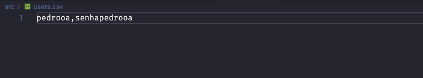
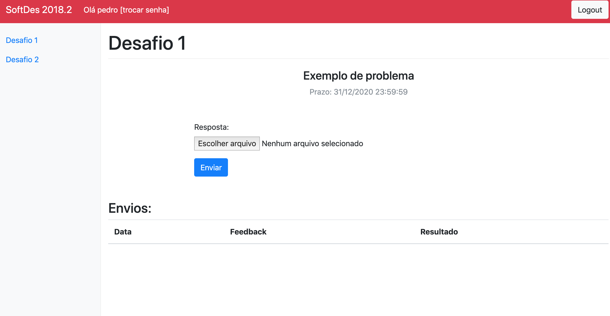

Guia para os professores
Como adicionar usuarios
Para adicionar novos usuários é necessário alterar/criar um arquivo users.csv na raíz do projeto. Ele deve ser populado linha por linha, em que cada linha representa um aluno, no formato : Login,Senha 
Feito isso, o script add_user.py deverá ser rodado para adicionar na base de dados os novos usuários.
Como adicionar novos desafios
Entrar na base de dados através do sqlite3 e rodar a uma query de inserção na table QUIZ.
Exemplo:
Insert into QUIZ (numb, release, expire, problem, tests, results, diagnosis) values (2, '2018-08-02', '2020-12-31 23:59:59', 'Exemplo de problema-novo', '[[1],[2],[3]]', '[0, 0, 0]', '["a","b","c"]')
 Na imagem acima é possível verificar que o novo desafio foi inserido e está visível como "Desafio 2" no menu lateral.